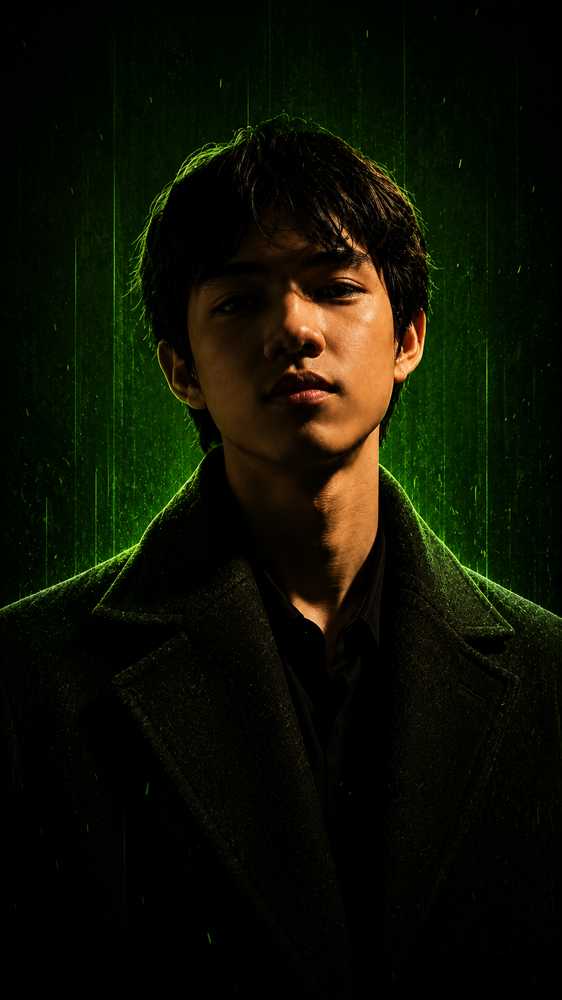
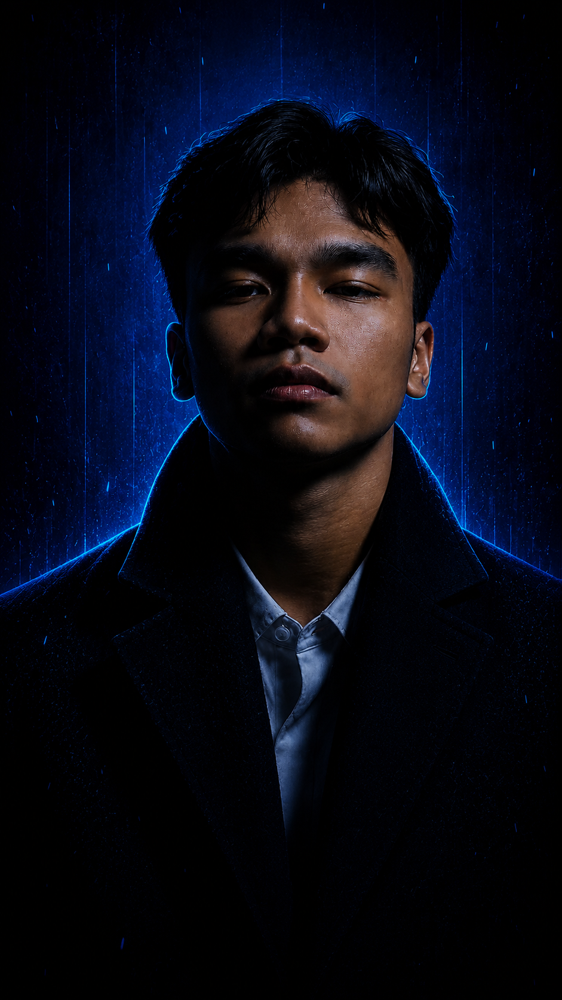

WELCOME TO
Recca
Recca Lee Magbanua Pendioday
Age: 19 years old
Birthdate: May 5, 2007
Address: Bingawan, Iloilo
Agba-o Elementary School
Graduated as Valedictorian
Batch of 2019
Mary Immaculate Academy
Graduated with High Honors
Batch of 2023
Central Philippine University
Graduated with High Honors
Batch of 2025
I’ve dabbled in speedcubing during junior high school, with my best time being ~20 seconds and my average time being 30-40 seconds.
I’ve been playing chess since elementary school, and I have participated in many school competitions over the years, and at one point even represented the Municipality of Calinog during the 3rd Congressional District Sports Association (CDSA) Meet.
From a technical perspective, I developed a strong foundation for programming, software development, and problem-solving. Learning different programming languages, applying object-oriented programming principles, and building projects taught me how to turn ideas into code. I also learned the importance of writing clean, organized, and maintainable code while becoming familiar with modern development tools and version control systems.
Beyond technical skills, I realized that understanding the fundamentals is more valuable than simply memorizing information (looking at you Calculus). Of course there’s also the usual lessons such as no procrastinating and no cramming. Group projects have also taught me how to collaborate effectively, divide responsibilities, resolve conflicts, and appreciate different perspectives. Overall, my college experience has helped me develop technical knowledge, practical skills, and personal values that will continue to be with me all throughout my college life and even after that.

Johnmarc
Johnmarc Balino Jayme
Age: 19 years old
Birthdate: October 5, 2006
Address: Calinog, Iloilo
Gaming is one of my biggest hobbies because it serves as my safe space where I can relax while also becoming competitive. I enjoy playing Valorant and different video games because they challenge my skills, improve my decision-making, and allow me to experience different types of gameplay, strategies, and stories.
Reading is another hobby that I enjoy because it allows me to explore different stories, ideas, and creative worlds. I like reading manga, manhwa, manhua, and web novels because they help improve my imagination and appreciation for different styles of storytelling.
I played chess during my high school days, especially when I was in Grade 10. Playing chess helped me develop strategic thinking, patience, and the ability to analyze different situations before making decisions.
Throughout my years in college, I have learned that continuous learning and improvement are important parts of personal and technical growth. My experiences in different projects have helped me improve my problem-solving skills, teamwork, and ability to adapt to challenges.
For my technical skills, I have experience with Python, vanilla HTML/CSS, and TypeScript, while continuously improving my programming and web development skills. I am also interested in Artificial Intelligence (AI) and exploring how it can be used to create innovative solutions and improve different technologies. My interest in technology also extends to gaming, where I enjoy learning about how games are developed, optimized, and improved through software and hardware.
One of the biggest lessons I have learned in college is that progress requires patience, consistency, and the willingness to learn from mistakes. I learned that challenges are opportunities to improve, and every experience helps me become a better developer and individual.

Bryan
Bryan Kenth Forro Estoesta
Age: 19 years old
Birthdate: January 12, 2007
Address: Calinog, Iloilo
Since I was 5 years old, I was already exposed to playing video games. From playing angry birds, house of the dead, and GTA San Andreas on my parents' laptops, to playing modern PC and mobile games is unchanged throughout the years.
It may have started when my parents heard me singing along Barney's "I love you" song when I was 4 years old. Every time we go to a family gathering, they always let me sing at karaoke with my cousins. In grade 5, this hobby became my way of serving our Lord when I joined our parish choir and is still active to this day.
Another hobby that came way before was watching movies. When subscription-based satellite television services were still a thing, HBO, Fox Movies, Celestial Movies, were some of my favorite channels on our Cignal TV. Cartoon Network, Disney Channel, Disney XD, and Animax were my go-to channels to watch cartoons. Adventure Time was my favorite by the way, and for a fun fact, its first pilot short episode was aired on January 11, 2007. Just a day before I was born. Before the Netflix era, I was my family's movie downloader, and every month (if possible), we do movie marathons with my cousins. Lastly, my interest in anime started during the pandemic. With me filling up my hard drive with isekai-themed anime, my love for the animation continues until now.
After a year in college, I have realized many things on how I should approach my day-to-day problems. One of those realizations is that: sleep is a luxury, especially when someone has poor time management. Too much sleep is bad because it can make one groggy and would have less time to do work. Being sleep deprived is worse because it makes me a zombie-like person on the next day.
As for my technical skills, it was the first time I get to learn to code and tackle the idea of creating and manipulating lines of code. My typing accuracy and speed also improved a lot, compared to myself 2 months before the first day of class in college. Learning Python as my first programming language, under a great teacher with a love for the subject makes learning easier, interesting and fun. This also made the transition on learning other PLs like JavaScript, TypeScript, and HTML easier, due to the fundamentals I learned with Python.
Going to college turned me into a new person. I got late in classes more often, sleeping past midnight, cramming lessons before exam days, having grades equivalent to a line of seven was not part of my bingo list. I guess my past self who was an academic achiever and has dreams of graduating with latin honors would be disappointed with me, but after knowing the things I've been through, maybe he would understand. On the other hand, have gained more knowledge, friends, and experiences that I would need in the unpredictable future.